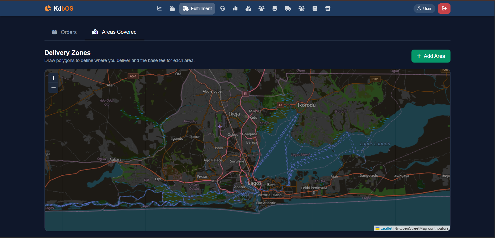
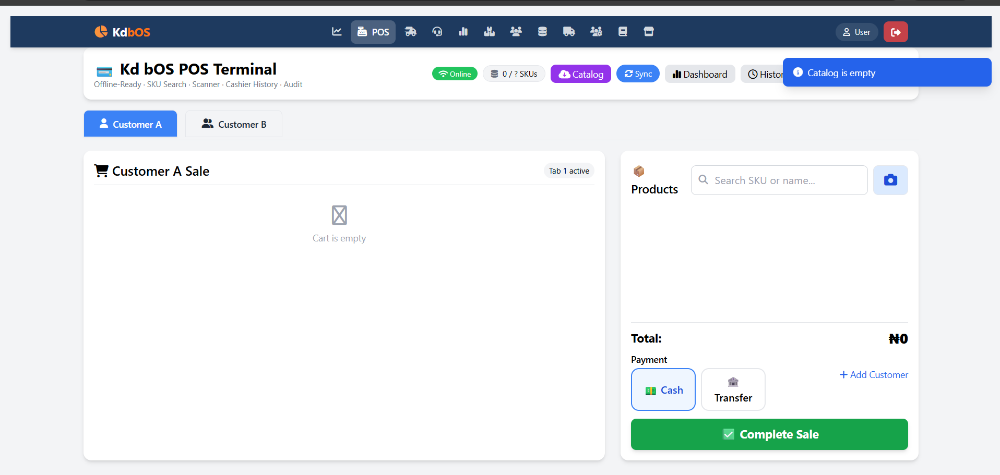
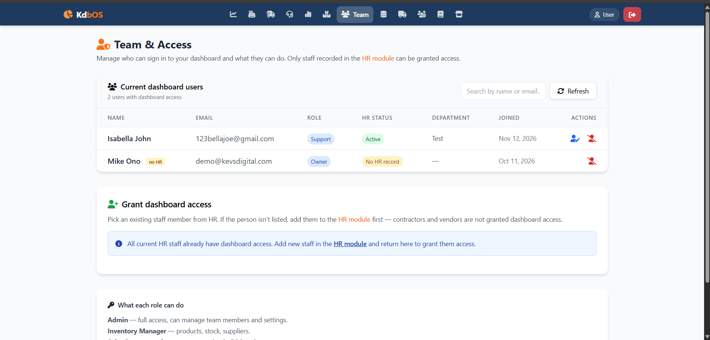

More than POS. Your entire business, connected.
From sales and inventory to procurement, fulfilment and business reports, Kevs bOS brings the essential operations of your business into one connected system.
Standalone systems create operational blind spots.
A POS records sales. A spreadsheet tracks stock. Purchasing happens over WhatsApp. Accounting lives in another tool. Each system holds a fragment of the truth, and nobody has the whole picture.
Stock does not match reality
When sales and inventory are recorded in different systems, counts drift. Reorder decisions become guesses. Losses become invisible until month-end.
Expiry is discovered too late
Product-level tracking misses which batch is actually expiring. Stock is written off before anyone has a chance to rotate or return it.
Management reporting lags
By the time the report is built, the decisions it should inform have already been made, without it.
Twelve modules. One connected operating system.
Every module shares the same data model. Sales affect inventory; inventory affects procurement; procurement affects accounts; everything feeds reporting.
Built for actual operations.
A look at the real Kevs bOS interface, designed for clarity, speed and operational control.

Inventory & Expiry Intelligence
Monitor stock across locations, track batch expiry dates, and see waste risk before it impacts your bottom line.

Dispatch & Delivery Zones
Define delivery areas, assign riders, and track goods in transit directly from the dispatch dashboard.

Point of Sale
A fast, reliable checkout interface that works offline and syncs automatically when connectivity returns.

Team & Role-Based Access
Grant dashboard access based on HR records. Control exactly what staff can see and do based on their role.
Expiry intelligence at the batch level.
Most inventory systems track products. Kevs bOS tracks batches, the actual units on the shelf, with their own expiry dates and remaining shelf life. That difference is where losses are either prevented or missed.
- Batch-level expiry monitoring
- Expiry-risk categorisation (critical, high, moderate)
- At-risk inventory valuation
- FEFO rotation recommendations
- Automated notifications and audit trails
The purpose of expiry intelligence is to make sure that at-risk stock is seen, acted on, and documented, before it becomes a write-off.
See how a supermarket found ₦56M at riskFEFO: First Expiry, First Out
Instead of FIFO ordering, bOS recommends which batch to sell first based on remaining shelf life. Staff receive a prioritised pick order rather than a general instruction.
Sales that keep moving.
The POS is designed for the realities of the floor, quick transactions, product search, and continuity when the network is unstable.
Built for real checkout, not just a demo.
Kevs bOS POS supports the sales operations of a busy retail or food-service environment, with product search, quick checkout, transaction records, and offline sales that synchronise automatically when connectivity returns.
- Sales processing and quick checkout
- Product search and catalogue lookup
- Full transaction history
- Offline sales with automatic sync on reconnect
One organisation. Every branch visible.
Multi-branch businesses need more than replicated single-store systems. Kevs bOS is built around the concept of an organisation with multiple locations, each with its own stock, staff and reporting, but all connected through a shared operational layer.
- Branch-specific operations and staff access
- Location-based inventory and stock transfers
- Separate shelf and e-commerce stock
- Central management visibility across locations
Organisation and branch scoping
Access is controlled at both the organisation level and the branch level. Staff see what they need to do their work, and nothing more.
Customer ordering and delivery, inside the same system.
Kevs bOS includes a customer-facing storefront and delivery workflow, so online orders flow into the same inventory and reporting layer as in-store sales.
Customer storefront
A customer-facing catalogue that lets regular customers place orders directly, with the business keeping the customer relationship and data.
Mobile apps
Storefront access is available through native mobile apps, described in the product documentation as available on Android and iOS.
Dispatch & delivery
Rider assignment, live delivery tracking, delivery verification and returns management, visible to both the business and the customer.
Operations, finance and people in one place.
Procurement, accounts, HR and executive reporting are part of the platform, not separate applications that have to be reconciled with the operational system.
Procurement
Purchase orders, supplier records and receiving flow directly into inventory and accounts. Reorder decisions are informed by actual stock and movement data.
Accounts
Chart of accounts, journals, payables and receivables are handled in the same system that records sales and purchases. Reporting reflects operational reality.
Human resources
Staff records, attendance and workforce administration are managed alongside the branches and roles those staff are assigned to.
Executive visibility
Management reporting across branches, sales, inventory risk and operational exceptions, designed for owners and executives, not just for the back office.
An assistant that supports operations, not oversells itself.
The Kevs bOS assistant uses the platform's knowledge base and operational data to answer questions, surface relevant information and support workflows, with clear limits on what it can do.
- Answers questions using the platform knowledge base
- Support workflow assistance and ticket routing
- Designed to assist staff, not to replace judgment
An assistant with a clear scope.
The assistant is a workflow and information tool. It does not replace the operational decisions or compliance obligations of the business.
Security designed into the platform.
Kevs bOS is built on a PostgreSQL and Supabase foundation, with tenant isolation enforced at the database level and access control scoped at organisation and branch level.
Tenant isolation
Database-level row security separates each organisation's data, so tenant boundaries are enforced by the platform rather than by application logic alone.
Scoped access control
Access is granted at the organisation and branch level, combined with role-based permissions for staff accounts.
Hardened web security
Security headers, rate limiting and webhook signature verification are part of the production configuration.
Backup & recovery
Backup and point-in-time recovery provisions are part of the platform architecture.
A co-managed deployment, not a plug-and-play install.
Kevs bOS is enterprise software delivered as a service. Deployment is a structured process involving both the Kevs Digital team and the client's operations team, with a two-week parallel run and reviews against the client's own baseline.
How implementation worksFive-stage deployment
Awareness → Desire → Knowledge → Ability → Reinforcement, followed by parallel run and day-30 / day-60 reviews.
See what your business can do with Kevs bOS.
Book a demonstration and we'll walk through the platform with the context of your own operations.